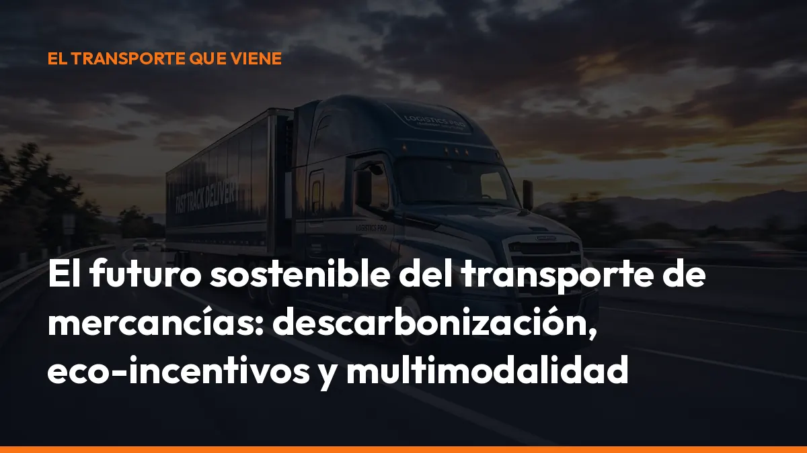

El futuro sostenible del transporte de mercancías: descarbonización, eco-incentivos y multimodalidad

A partir de ahora, tendrás que mover mercancías con menos emisiones, utilizar mejor los recursos y demostrar una gestión más eficiente de cada porte. La carretera seguirá siendo esencial, pero convivirá con el ferrocarril, el transporte marítimo, la electrificación y la logistics documentation digital.
La transición ya está en marcha. Y las empresas que se adapten antes podrán reducir costes, acceder a ayudas y competir con más fuerza.
La descarbonización marcará el transporte de mercancías hasta
2030
La Unión Europea ha fijado objetivos concretos para reducir las emisiones del transporte. El objetivo general es disminuir las emisiones netas de gases de efecto invernadero al menos un 55 % en 2030 respecto a 1990.
El transporte de mercancías tendrá que contribuir a ese cambio en todos sus modos:
- Carretera: camiones eléctricos, combustibles alternativos y rutas más eficientes.
- Ferrocarril: mayor capacidad para transportar cargas en largas distancias.
- Marítimo: renovación de buques y uso de combustibles bajos en emisiones.
- Logística: menos kilómetros en vacío, más planificación y documentos digitales.
La sostenibilidad no consiste únicamente en comprar un vehículo nuevo. También implica aprovechar mejor cada viaje, reducir esperas, evitar errores administrativos y coordinar todos los actores de la cadena.
Empieza por revisar tus rutas, tus consumos y tu documentación. Cada mejora operativa reduce costes y prepara tu empresa para las nuevas exigencias.
250 millones de euros para renovar la flota marítima
El transporte marítimo concentra una parte esencial del comercio mundial. Por eso, su descarbonización será una de las grandes prioridades de los próximos años.
España ha previsto un plan de 250 millones de euros entre 2026 y 2030 para impulsar la renovación y modernización de la flota marítima. El programa contempla:
- 200 millones de euros para renovar la flota mercante.
- 150 millones de euros para construir nuevos buques de bajas emisiones.
- 50 millones de euros para transformar y modernizar buques existentes.
- 49,61 millones de euros destinados a tecnologías y combustibles bajos en emisiones.
El objetivo es reducir al menos un 20 % las emisiones de gases de efecto invernadero del transporte marítimo en 2030 respecto a 2008, con la ambición de alcanzar el 25 %.
Estas inversiones permitirán incorporar buques más eficientes, adaptar motores y utilizar combustibles alternativos como metanol renovable, hidrógeno, amoniaco verde o combustibles renovables de origen no biológico.
La información sobre el plan español de descarbonización marítima muestra hacia dónde se dirige el sector.
Los eco-incentivos hacen más competitivo el cambio modal
Cambiar parte de la carga de la carretera al ferrocarril o al transporte marítimo puede reducir emisiones, pero también exige adaptar operaciones, contratos y rutas.
Para facilitar ese cambio, el Ministerio de Transportes ha puesto en marcha programas de eco-incentivos al transporte sostenible dentro del Plan de Recuperación, Transformación y Resiliencia. En la tercera convocatoria del eco-incentivo marítimo se concedieron más de 11,8 millones de euros a 32 empresas de transporte de mercancías, cargadores y operadores logísticos. Las empresas trasladaron remolques, semirremolques o vehículos pesados rígidos en buques en lugar de completar todo el trayecto por carretera.
También existe una línea ferroviaria. En su segunda convocatoria se adjudicaron 21,8 millones de euros a siete operadores privados de transporte ferroviario de mercancías.
Estas ayudas persiguen tres beneficios concretos:
- Menos emisiones: se reducen los kilómetros realizados exclusivamente por carretera.
- Menos congestión: se descongestionan las principales vías de transporte.
- Más competitividad: se compensa parte del coste inicial de cambiar de modelo.
El programa conjunto de eco-incentivos marítimos y ferroviarios cuenta con una dotación inicial de 120 millones de euros, financiada con fondos europeos NextGenerationEU.
Consulta los programas disponibles en la sede electrónica del Ministerio de Transportes y comprueba si tu actividad puede beneficiarse.
No esperes a que el cambio modal sea obligatorio. Analiza ahora qué trayectos puedes combinar con tren o barco.
La multimodalidad será la clave de un transporte más eficiente
La multimodalidad consiste en utilizar varios medios de transporte dentro de una misma operación logística.
Por ejemplo:
1. El camión recoge la mercancía en el punto de origen. 2. El tren realiza el tramo principal de larga distancia. 3. El transporte marítimo conecta puertos y corredores internacionales. 4. Otro camión completa la entrega final.
Este sistema permite asignar cada tramo al modo más eficiente. El camión mantiene su papel esencial en la primera y última milla, mientras que el ferrocarril y el barco pueden asumir recorridos largos con menor impacto por tonelada transportada.
Para que funcione, necesitas coordinar:
- Horarios de carga y descarga.
- Reservas de trenes o buques.
- Documentación aduanera y de transporte.
- Seguimiento de la mercancía.
- Firmas y comprobantes de entrega.
- Comunicación entre cargador, transportista y operador.
Aquí la digitalización es decisiva. Si cada participante trabaja con documentos distintos, aumentan los errores, las llamadas y los retrasos. Si todos utilizan información actualizada, la operación es más rápida y trazable.
Digitaliza tu documentación logística y prepara tus operaciones para trabajar en multimodalidad.
La electrificación cambiará el transporte por carretera
El camión eléctrico tendrá un papel cada vez más importante, especialmente en distribución urbana, rutas regionales y recorridos con regreso habitual a base.
Sus ventajas principales son:
- Menor consumo energético por kilómetro.
- Cero emisiones directas durante la conducción.
- Menos ruido en zonas urbanas.
- Menores costes de mantenimiento.
- Acceso más sencillo a zonas de bajas emisiones.
Sin embargo, la electrificación del transporte pesado exige planificación. Tendrás que estudiar la autonomía, los tiempos de carga, la potencia disponible y la ubicación de los cargadores.
Para rutas de larga distancia también se desarrollarán soluciones basadas en hidrógeno, biocombustibles avanzados y otras tecnologías. No habrá una única solución para todas las empresas. La opción adecuada dependerá del tipo de carga, la distancia y la frecuencia de los viajes.
La normativa europea sobre vehículos pesados establece objetivos de reducción de emisiones de CO₂ del 45 % para 2030, del 65 % para 2035 y del 90 % a partir de 2040, tomando como referencia los niveles de 2019.
Consulta el marco europeo sobre emisiones de camiones y autobuses y empieza a planificar la renovación de tu flota.
La digitalización también reduce emisiones
La sostenibilidad no depende solo del tipo de combustible. También depende de cómo organizas el trabajo diario.
Un documento digital evita desplazamientos innecesarios, reduce el consumo de papel y facilita que la información llegue al instante a la oficina, al conductor y al cliente.
Con una herramienta de documentación logística digital puedes:
- Generar documentos en segundos: evita rellenar formularios repetidos.
- Firmar desde el móvil: elimina impresiones y envíos posteriores.
- Guardar cada porte automáticamente: localiza la información durante una inspección.
- Compartir documentos al instante: reduce llamadas y correos.
- Consultar la trazabilidad: conoce cuándo se creó y modificó cada documento.
- Trabajar desde cualquier lugar: cabina, oficina, almacén o carretera.
En Mi Carga puedes generar documentos de control y cartas de porte desde el móvil o el navegador. La aplicación permite descargar los documentos en PDF, compartirlos y mantenerlos organizados en un único sistema.
Empieza con 10 transportes gratis, sin tarjeta y sin compromiso. Crea tu cuenta en la app y comprueba cómo funciona desde el primer porte.
El futuro sostenible empieza con decisiones concretas
El transporte sostenible de mercancías será más digital, multimodal y eficiente. La descarbonización marítima recibirá inversiones importantes. Los eco-incentivos impulsarán el tren y el barco. Los camiones eléctricos crecerán en las rutas adecuadas. Y las empresas tendrán que controlar mejor sus datos y documentos.
No necesitas transformar toda tu operativa en un solo día.
Empieza por acciones sencillas:
- Revisa qué rutas pueden combinar carretera y ferrocarril.
- Estudia si el transporte marítimo puede sustituir algún trayecto.
- Calcula el coste real de renovar parte de tu flota.
- Comprueba las ayudas disponibles.
- Digitaliza tus documentos de control.
- Reduce el uso de papel y evita duplicar información.
- Mide tus kilómetros, consumos y tiempos de espera.
La sostenibilidad también es eficiencia. Menos errores, menos esperas, menos documentos repetidos y más control sobre cada operación.
¿Estás preparado para el futuro del transporte de mercancías?
La transición ya ha comenzado. Las ayudas están activas, los objetivos europeos tienen fechas concretas y la tecnología está disponible.
Da el primer paso hoy:
1. Crea tu cuenta gratuita en Mi Carga. 2. Genera tus 10 primeros documentos sin coste. 3. Prueba la gestión digital desde tu móvil. 4. Elige el plan de 10 € al mes cuando necesites documentos ilimitados.
Sin tarjetas. Sin compromisos. Sin costes ocultos.
Digitaliza tu transporte, reduce tareas y prepara tu empresa para una logística más sostenible.
Fuentes consultadas
- Organización Marítima Internacional: reducción de emisiones de gases de efecto invernadero de los buques
- Plan español de descarbonización del transporte marítimo
- Eco-incentivo marítimo del Plan de Recuperación
- Eco-incentivo ferroviario para mercancías
- Objetivos europeos para las emisiones de camiones y autobuses
Genera tus 10 primeros documentos gratis con Mi Carga
DeCA, carta de porte y ADR, en PDF, con QR y archivo automático en la nube.
Empezar con 10 documentos gratisArtículo informativo. Consulta siempre el caso concreto de tu operación. ¿Dudas? Escríbenos.